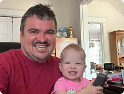
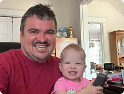
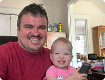
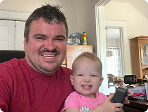

Founder's story

 



For years, I've worked in high-stakes environments, solving complex problems under immense pressure. I pushed myself past my limits time and time again, believing that resilience alone would keep me going. But the reality is, no one can outrun burnout forever. This time, I hit a breaking point.
After months of unpaid leave, I found myself battling not only mental exhaustion but a serious health crisis. The physical strength I once had is gone, replaced by the toll of an autoimmune condition that took months to diagnose. At the same time, I'm working through a recovery program to break free from the dependencies I developed to keep up with impossible expectations.
Through it all, my wife has carried the weight of our family alone—raising a newborn and a toddler while I've been in and out of treatment. At this stage, they need me more than ever, and I need to get back on my feet—not just for myself, but for them.
Now, I have a choice. I can either get forced back into the same cycle, or I can take control of my future. I choose the latter. This time, I'm building something sustainable—something that allows me to work on my own terms and take care of my family the right way.
To make that happen, I need $7,000 to stay on track with my recovery and $3,000 to launch my business, ensuring I never end up in this position again.
If you can help, I'd be incredibly grateful. Every donation, every share, every bit of support makes a real impact. This is my turning point, and I refuse to waste it.
Thank you to everyone who has stood by me. Your support means everything.